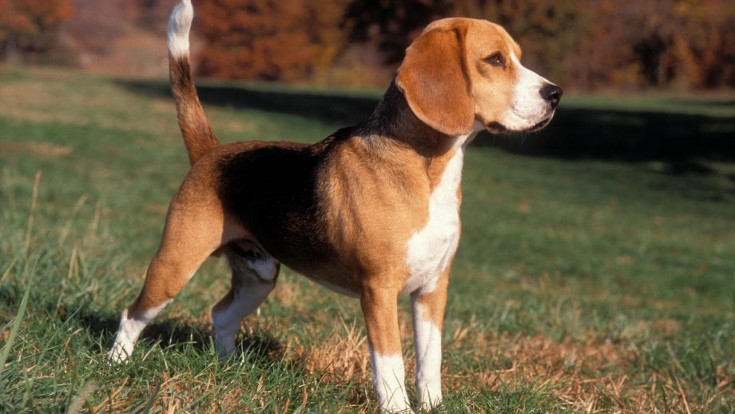

Зміст
Ключові факти
- Тривалість життя: 12-15 років
- Вага: 10-11 кг
- Висота: 33-40 см
- Колір: Триколор
- Розмір: Середня
Історія та походження
Приблизно в середині XVI століття гончих собак почали класифікувати за призначенням, тобто гончі собаки, що йдуть за зором, гончі собаки з дуже гарним нюхом тощо. Приблизно в цей час маленькій гончій собаці, виведеній для полювання на кроликів і зайців, було присвоєно назву «бегель», французьке слово, що означає «луджене горло». Це обумовлено схильністю тварин «виставляти язика», тобто заливатися гавкотом. Англомовна версія — це, звичайно, бігль. Порода походить від фоксгаунда, харрієра та маленького бладгаунда, відомого як «керрі-бігль».
Ідеальний власник
Ідеальний власник бігля весь час перебуває вдома, любить прогулянки, дресирування з позитивним підкріпленням і зокрема участь в іграх або спортивних змаганнях на основі запахів, наприклад, переслідування або стеження. Власниками бігля може бути сім’я зі старшими дітьми або сім’я без дітей, але тривалі, цікаві сільські прогулянки мають займати важливе місце в його житті – разом із любов’ю до собак, що полюбляють фізичний контакт.
Потреби у фізичних вправах
Бігль потребує багато фізичних вправ — близько двох годин і більше на день. Через його сильний мисливський інстинкт його не можна відпускати з повідця, поки він не навчиться повертатися, коли його покличуть, або ж треба вигулювати в закритій зоні. Один зі способів підтримувати вашого бігля в гарній формі — це дозволити йому використовувати свій винятково сильний нюх і свої природні здібності йти за запахом.